Grundlæggende Animation

I tema 3 har formålet være at få en forståelse for vigtigheden af interaktionen mellem brugere og brugergrænseflader. Heri ligger begrebet User eXperince, hvordan brugeren oplever den digtiale løsning. Vi lavede en prototype i Adobe XD med udgangspunkt i salg af t-shirt. Denne prototype skabte jeg ud fra research som interview eller styletile, hvor jeg besluttede mig for mine design valg. Denne prototype testede jeg så på mine medstuderende for at finde ud af om mine løsninger gav mening og om de kunne navigere rundt på sitet efter mine anvisninger.